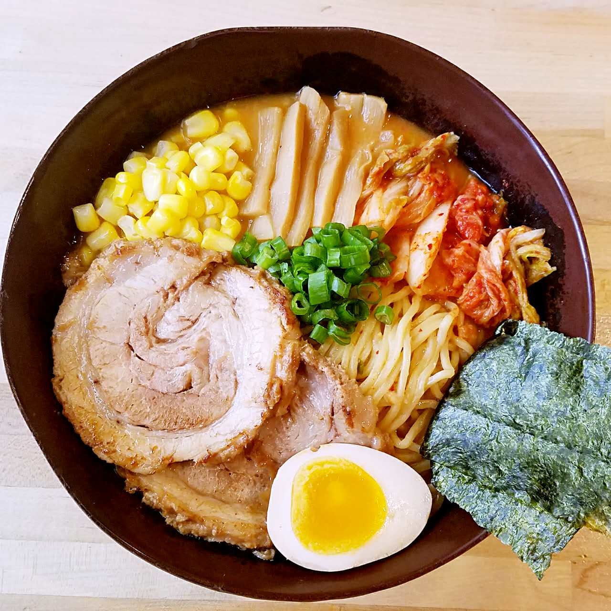
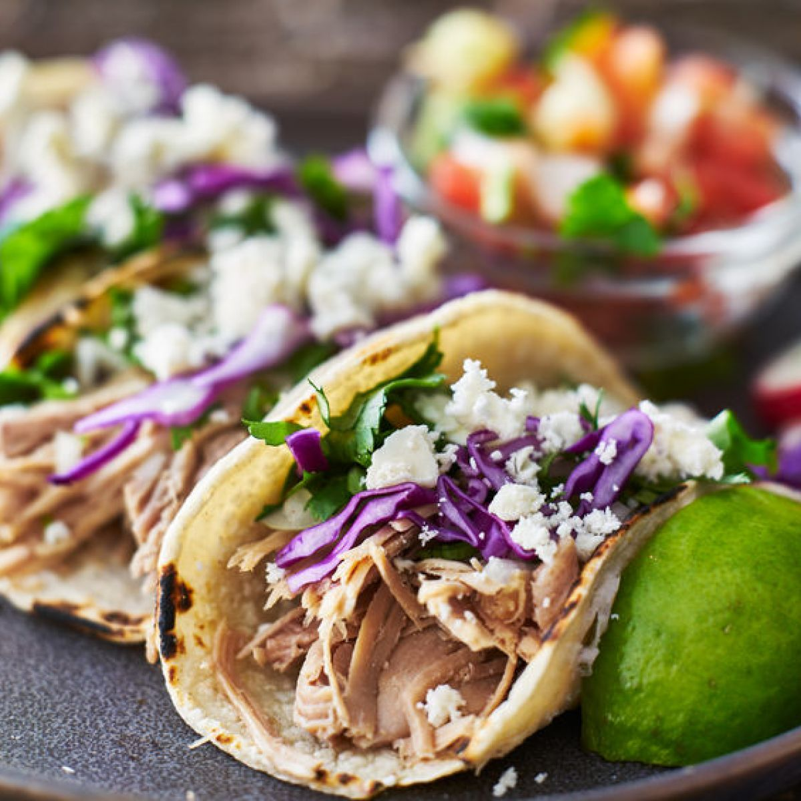
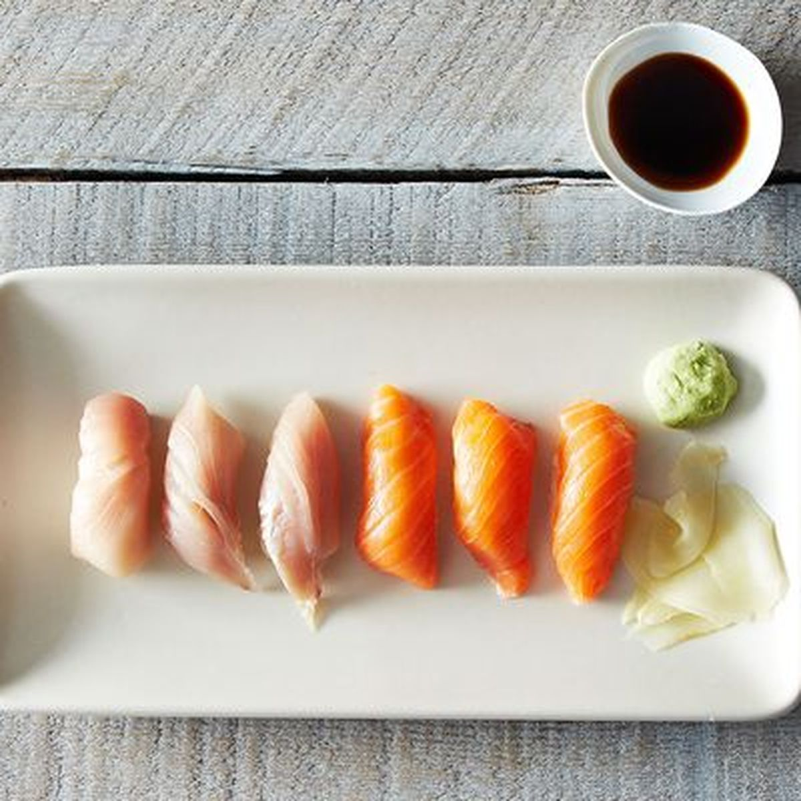

|  |
RamenRamen is a Japanese dish. It consists of noodles + toppings served in a meat or fish-based broth, often flavored with soy sauce or miso. There is also vegan ramen but that doesn't really count. |
|  |
Street TacosA "street taco" is typically more traditional, with soft corn tortillas and grilled or pan-fried chicken, beef, or pork. It's usually served with onions and cilantro, and salsa. |
|  |
SushiSushi is a Japanese dish of specially prepared vinegared rice, usually with some sugar and salt, combined with a variety of ingredients, such as seafood, vegetables, and occasionally tropical fruits. |